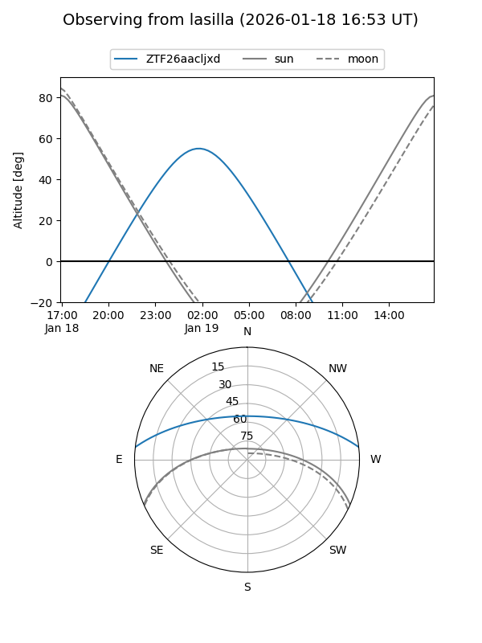
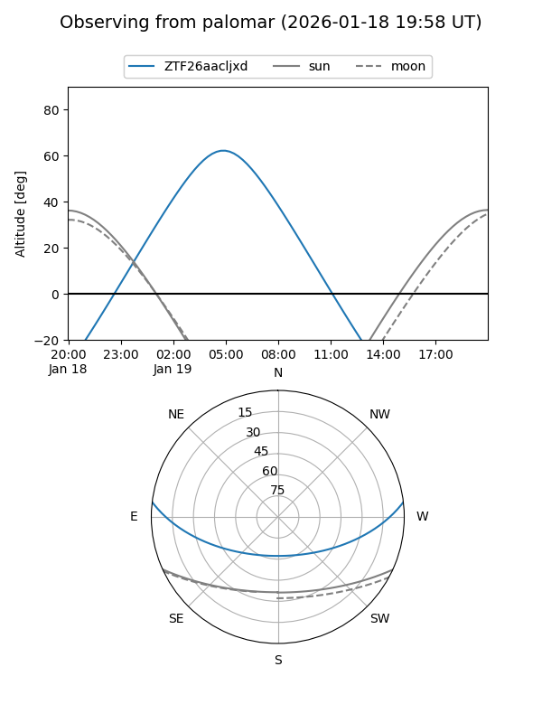

ZTF26aacljxd
Target ZTF26aacljxd at 2026-01-19 05:50
Aliases and brokers:
FINK: link
Lasair: link
ALeRCE: link
alt names
ZTF26aacljxd (ztf,fink_ztf)
Coordinates:
equatorial (ra, dec) = 74.2629,+5.57914
equatorial (HMS+DMS) = 04:57:03.09,+05:34:44.91
galactic (l, b) = (193.7649,-22.31105)
Flags:
Photometry:
last ztfg=20.37
1 ztfg detections
Lightcurve

Visibility


Additional plots